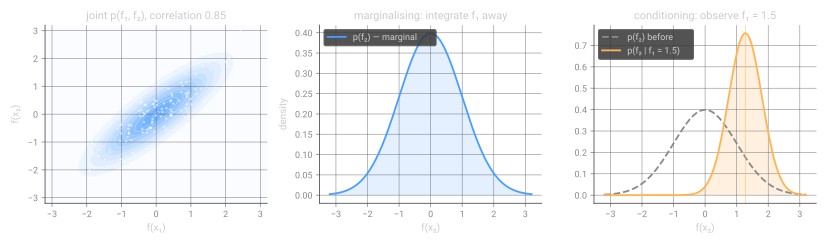
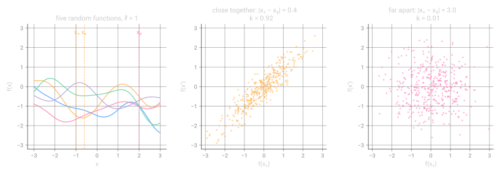
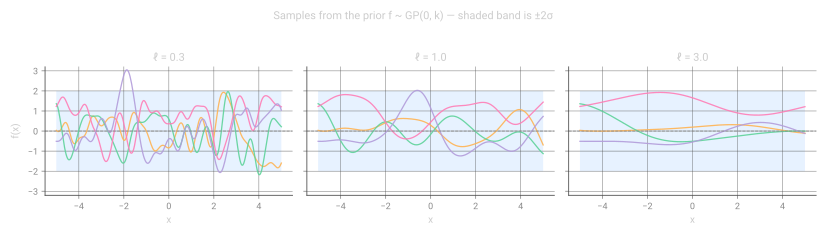
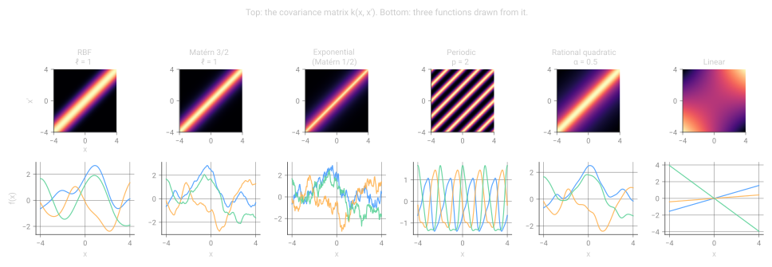
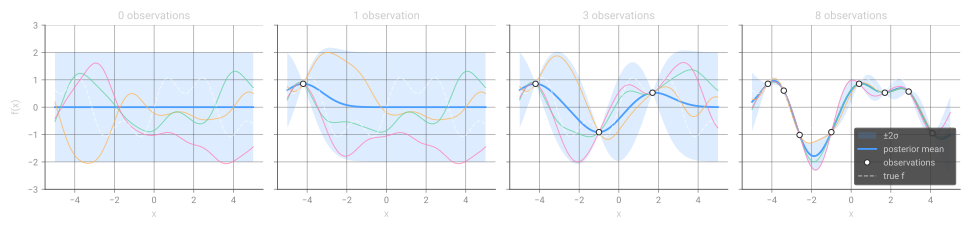
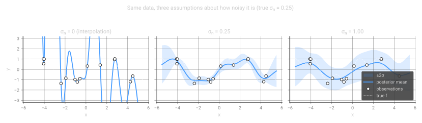
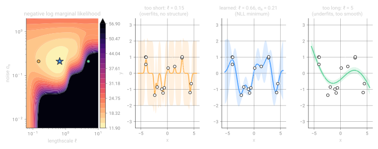
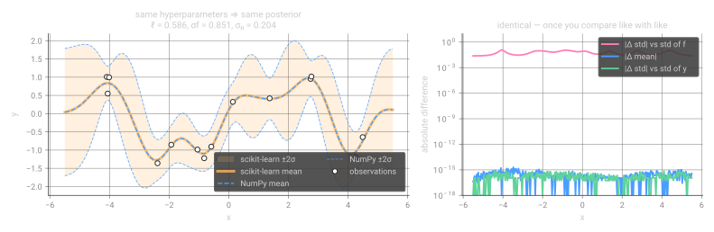
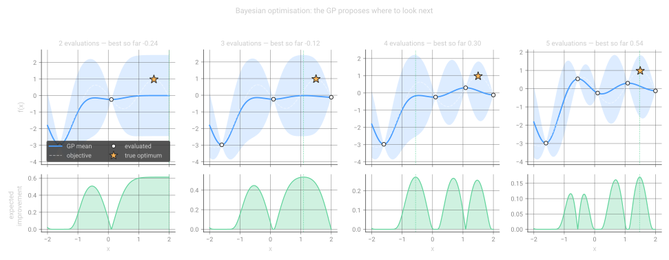
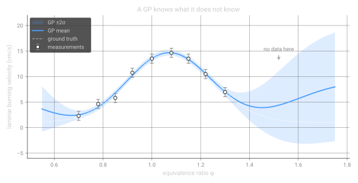

Gaussian Processes from Scratch
Most of machine learning asks: what is the best function that fits my data? A Gaussian process asks a better question: which functions are consistent with my data, and how sure am I about each of them? This post builds the answer from a single fact about Gaussian distributions, with about fifty lines of NumPy and a lot of pictures.
1Why distributions over functions
Suppose you measure something — a flame speed, a drag coefficient, the runtime of a simulation — at seven input settings, and you need a prediction at an eighth. The standard move is to pick a parametric family (a cubic polynomial, a neural network), find the parameters that minimise some loss, and report the resulting curve.
Two things are unsatisfying about that. First, you had to commit to a family before looking at the data, and the family quietly does most of the work. Second, and more importantly, the answer comes with no honest statement of how much it should be trusted. Interpolating between two nearby measurements and extrapolating far outside the data both produce a number, and the number looks equally confident in both cases.
A Gaussian process fixes both problems by refusing to pick a single function. Instead it puts a probability distribution over all functions that are plausible a priori — typically "all reasonably smooth ones" — and then uses Bayes' rule to throw away the ones that disagree with the data. What is left is a distribution over functions, whose spread is the uncertainty:
A Gaussian process is a collection of random variables, any finite subset of which has a joint Gaussian distribution. Write it as
$$f(x) \sim \mathcal{GP}\big(m(x),\, k(x,x')\big)$$
where the mean function \(m(x) = \mathbb{E}[f(x)]\) says what we expect before seeing data, and the covariance function (the kernel) \(k(x,x') = \mathbb{E}\big[(f(x)-m(x))(f(x')-m(x'))\big]\) says how strongly the function values at two inputs move together.
That definition is doing something sneaky, and it is worth pausing on. It defines an object over an infinite-dimensional space (functions) purely through statements about finite collections of points. This is what makes GPs computable: you never touch the infinite object, only the finitely many points you actually care about. Everything below follows from that.
2The one fact you need about Gaussians
Take a two-dimensional Gaussian. Write the two components as \(f_1\) and \(f_2\):
$$\begin{bmatrix} f_1 \\ f_2 \end{bmatrix} \sim \mathcal{N}\left( \begin{bmatrix} \mu_1 \\ \mu_2 \end{bmatrix}, \begin{bmatrix} \Sigma_{11} & \Sigma_{12} \\ \Sigma_{21} & \Sigma_{22} \end{bmatrix} \right)$$Gaussians are closed under the two operations you need for inference, and both have closed forms:
Marginalisation. If you do not care about \(f_1\), integrate it out. The result is Gaussian, and you get it by deleting rows and columns:
$$p(f_2) = \int p(f_1, f_2)\, \mathrm{d}f_1 = \mathcal{N}(\mu_2,\, \Sigma_{22})$$Conditioning. If you observe \(f_1 = a\), the distribution of \(f_2\) is again Gaussian, shifted towards the observation and narrowed:
$$p(f_2 \mid f_1 = a) = \mathcal{N}\big(\underbrace{\mu_2 + \Sigma_{21}\Sigma_{11}^{-1}(a - \mu_1)}_{\text{mean, pulled towards }a},\; \underbrace{\Sigma_{22} - \Sigma_{21}\Sigma_{11}^{-1}\Sigma_{12}}_{\text{variance, reduced}}\big)$$
Notice that the variance reduction term does not depend on the observed value \(a\) at all. Where you measure determines how much uncertainty you remove; what you measure only moves the mean. This is exactly why a GP can tell you where to take your next measurement before you take it — see §11.
3Functions as very long vectors
Here is the conceptual jump. A function evaluated on a grid of 300 points is just a vector in \(\mathbb{R}^{300}\). If we can put a 300-dimensional Gaussian over that vector, we have a distribution over functions-restricted-to-that-grid. Refine the grid and nothing breaks: the marginalisation property guarantees that the distribution on a coarse grid is exactly what you get by integrating away the extra points of a fine grid. The two views are consistent, which is why "an infinite-dimensional Gaussian" is a legitimate object.
What makes the resulting vector look like a function rather than noise is the covariance. If \(f(x)\) and \(f(x')\) are strongly correlated whenever \(x\) and \(x'\) are close, then samples come out continuous and smooth. Correlation is the mathematical content of the word "smooth".

4The kernel is the model
Choosing a kernel is choosing what you believe about the function before you see data. It is the GP equivalent of choosing an architecture, and it is far more interpretable. The workhorse is the squared exponential, or RBF kernel:
$$k_{\mathrm{RBF}}(x, x') = \sigma_f^2 \exp\!\left(-\frac{\|x - x'\|^2}{2\ell^2}\right)$$It has two hyperparameters with plain-English meanings:
- The lengthscale \(\ell\) — how far you have to move in input space before the function value changes appreciably. Small \(\ell\) means wiggly; large \(\ell\) means slowly varying.
- The signal variance \(\sigma_f^2\) — the vertical scale. \(\sigma_f\) is roughly the amplitude of the typical deviation from the mean.

The RBF is not the only option, and its assumption of infinite differentiability is often too strong for physical data. A kernel is valid as long as it produces positive semi-definite covariance matrices for any set of inputs. Some standard choices, all of which cost you one line of NumPy:
| Kernel | Form | Use it when |
|---|---|---|
| RBF / squared exponential | \(\sigma_f^2 \exp(-r^2/2\ell^2)\) | the function is genuinely very smooth |
| Matérn 3/2 | \(\sigma_f^2 (1 + \sqrt{3}r/\ell)e^{-\sqrt{3}r/\ell}\) | default for physical measurements; once differentiable |
| Matérn 1/2 (exponential) | \(\sigma_f^2 e^{-r/\ell}\) | rough, Brownian-looking signals |
| Periodic | \(\sigma_f^2\exp\!\big(-2\sin^2(\pi r/p)/\ell^2\big)\) | cycles with known period \(p\) |
| Rational quadratic | \(\sigma_f^2(1 + r^2/2\alpha\ell^2)^{-\alpha}\) | several lengthscales at once |
| Linear | \(\sigma_f^2(x-c)(x'-c)\) | you want Bayesian linear regression back |

Sums and products of valid kernels are valid kernels, and this is where GP modelling gets expressive. periodic × RBF gives a cycle whose shape drifts slowly; linear + periodic gives a trend with seasonality; RBF(ℓ=10) + RBF(ℓ=0.5) gives a slow trend with fast structure on top. You are writing down a model of the phenomenon, not tuning knobs.
5Sampling the prior in NumPy
To draw a function from the prior, evaluate the kernel on a grid to get a covariance matrix \(K\), then sample from \(\mathcal{N}(0, K)\). The trick for sampling a correlated Gaussian is the Cholesky factorisation: if \(K = LL^\top\) and \(u \sim \mathcal{N}(0, I)\), then \(Lu\) has covariance \(L\,\mathbb{E}[uu^\top]L^\top = LL^\top = K\). That is the whole sampler.
import numpy as np
def rbf(X1, X2, lengthscale=1.0, variance=1.0):
"""Squared-exponential covariance between two sets of 1-D inputs."""
X1 = np.atleast_2d(X1).reshape(-1, 1)
X2 = np.atleast_2d(X2).reshape(-1, 1)
sq = (X1 - X2.T) ** 2 # pairwise squared distances
return variance * np.exp(-0.5 * sq / lengthscale ** 2)
def sample_gp(mean, cov, n_samples=1, rng=None, jitter=1e-9):
"""Draw samples from N(mean, cov) using its Cholesky factor."""
rng = np.random.default_rng() if rng is None else rng
n = cov.shape[0]
L = np.linalg.cholesky(cov + jitter * np.eye(n)) # K = L @ L.T
u = rng.standard_normal((n, n_samples))
return mean.reshape(-1, 1) + L @ u
X = np.linspace(-5, 5, 300)
K = rbf(X, X, lengthscale=1.0)
samples = sample_gp(np.zeros(len(X)), K, n_samples=4) # (300, 4)
A covariance matrix from a smooth kernel on a fine grid is numerically singular: nearby columns are almost identical, so the smallest eigenvalues fall below double precision and Cholesky fails with "matrix is not positive definite". Adding \(10^{-9}I\) says "every observation carries a whisper of independent noise", which is both true and enough to fix the factorisation. If you need more than about \(10^{-6}\), your lengthscale is probably far too long for your grid.
6Conditioning on data
Now the payoff. We have training inputs \(X\) with observed values \(\mathbf{y}\), and we want the function at test inputs \(X_*\). By the definition of a GP, the training and test values are jointly Gaussian:
$$\begin{bmatrix} \mathbf{y} \\ \mathbf{f}_* \end{bmatrix} \sim \mathcal{N}\left(\mathbf{0}, \begin{bmatrix} K(X,X) & K(X,X_*) \\ K(X_*,X) & K(X_*,X_*) \end{bmatrix}\right)$$We know \(\mathbf{y}\). So apply the conditioning formula from §2 verbatim, with \(K = K(X,X)\), \(K_* = K(X,X_*)\) and \(K_{**} = K(X_*,X_*)\):
$$\begin{aligned} \boldsymbol{\mu}_* &= K_*^\top K^{-1}\mathbf{y} \\[4pt] \boldsymbol{\Sigma}_* &= K_{**} - K_*^\top K^{-1} K_* \end{aligned}$$That is Gaussian process regression. There is no training loop, no gradient descent, no iteration — given the kernel, the posterior is available in closed form. Two things are worth staring at:
- The mean is \(\boldsymbol{\mu}_* = K_*^\top \boldsymbol{\alpha}\) with \(\boldsymbol{\alpha} = K^{-1}\mathbf{y}\), which written out is \(\mu(x) = \sum_{i=1}^{n} \alpha_i\, k(x, x_i)\). The posterior mean is always a weighted sum of kernel functions centred on the training points. The data chooses the weights; the kernel chooses the shape.
- The variance \(\boldsymbol{\Sigma}_*\) contains no \(\mathbf{y}\). Uncertainty depends only on where you have looked, not on what you found there — the same observation as in Figure 1, now for functions.
def gp_posterior_naive(X_s, X, y, kernel, **kw):
K = kernel(X, X, **kw)
K_s = kernel(X, X_s, **kw)
K_ss = kernel(X_s, X_s, **kw)
K_inv = np.linalg.inv(K) # don't ship this - see section 8
mu = K_s.T @ K_inv @ y
cov = K_ss - K_s.T @ K_inv @ K_s
return mu, cov

Look at the far right of each panel. As you move away from the data, the posterior mean decays back to the prior mean (zero here) and the variance grows back to the prior variance. A GP does not extrapolate a trend — it admits ignorance. Whether that is a feature or an annoyance depends on your application, and it is the main reason people put a non-zero mean function (a linear or physics-based trend) into their GP.
7Noise, and why you need it
Real measurements are corrupted. Model the observation as \(y_i = f(x_i) + \varepsilon_i\) with \(\varepsilon_i \sim \mathcal{N}(0, \sigma_n^2)\) independent of everything else. Because independent Gaussians add in variance, this changes exactly one thing — the training block of the covariance:
$$\mathrm{cov}(\mathbf{y}) = K(X,X) + \sigma_n^2 I$$and the predictive equations become
$$\boldsymbol{\mu}_* = K_*^\top (K + \sigma_n^2 I)^{-1}\mathbf{y}, \qquad \boldsymbol{\Sigma}_* = K_{**} - K_*^\top (K + \sigma_n^2 I)^{-1} K_*$$One term, two consequences. The model is no longer forced to interpolate — it can pass near the data instead of through it — and \(K + \sigma_n^2I\) is far better conditioned than \(K\), so the linear algebra stops being fragile. The noise level is a regulariser you can interpret: it is your claim about measurement error, in the units of your measurements.

8Doing it properly: Cholesky
Never call np.linalg.inv on a covariance matrix. It is roughly twice the work of a Cholesky factorisation and numerically much worse, because it discards the structure — symmetry and positive definiteness — that you paid for. The standard recipe is Algorithm 2.1 of Rasmussen & Williams: factor once, then solve triangular systems.
Write \(K + \sigma_n^2I = LL^\top\). Then \(\boldsymbol{\alpha} = L^\top \backslash (L \backslash \mathbf{y})\) gives the mean in two triangular solves, and with \(v = L \backslash K_*\) the predictive covariance is \(K_{**} - v^\top v\), which is manifestly symmetric.
def gp_posterior(X_s, X, y, kernel, noise=1e-8, **kw):
"""Posterior mean and covariance of a zero-mean GP at test inputs X_s."""
n = len(X)
K = kernel(X, X, **kw) + noise ** 2 * np.eye(n)
K_s = kernel(X, X_s, **kw)
K_ss = kernel(X_s, X_s, **kw)
L = np.linalg.cholesky(K + 1e-10 * np.eye(n)) # O(n^3), done once
alpha = np.linalg.solve(L.T, np.linalg.solve(L, y)) # K^-1 y
v = np.linalg.solve(L, K_s) # L^-1 K_*
mu = K_s.T @ alpha
cov = K_ss - v.T @ v
return mu.ravel(), cov
def nll(X, y, kernel, noise, **kw):
"""Negative log marginal likelihood -log p(y | X)."""
n = len(X)
K = kernel(X, X, **kw) + noise ** 2 * np.eye(n)
L = np.linalg.cholesky(K + 1e-10 * np.eye(n))
alpha = np.linalg.solve(L.T, np.linalg.solve(L, y))
return float(0.5 * y.ravel() @ alpha.ravel() # data fit
+ np.sum(np.log(np.diag(L))) # complexity penalty
+ 0.5 * n * np.log(2 * np.pi)) # constant
np.linalg.solve on a triangular matrix works but does not exploit triangularity; scipy.linalg.solve_triangular(L, y, lower=True) is the faster call if you are willing to take the SciPy dependency. The Cholesky also hands you the log-determinant for free — \(\log|K| = 2\sum_i \log L_{ii}\) — which is exactly what the marginal likelihood needs next.
9Learning the hyperparameters
So far \(\ell\), \(\sigma_f\) and \(\sigma_n\) have been set by hand. The Bayesian answer is to integrate them out; the practical answer, and the one every library uses by default, is to maximise the marginal likelihood — the probability of the observed data with the function itself integrated away:
$$\log p(\mathbf{y} \mid X, \boldsymbol{\theta}) = \underbrace{-\tfrac{1}{2}\mathbf{y}^\top K_\theta^{-1}\mathbf{y}}_{\text{fits the data}} \;\underbrace{-\; \tfrac{1}{2}\log|K_\theta|}_{\text{penalises complexity}} \;-\; \tfrac{n}{2}\log 2\pi$$This quantity deserves its reputation. The first term rewards explaining the data; the second punishes flexible models, because a kernel that can express many functions spreads its probability mass thin and has a large determinant. No validation set, no held-out split — the trade-off falls out of the probability calculus. This is Occam's razor arriving unbidden.

In practice you minimise the negative log marginal likelihood with a quasi-Newton method, on a log scale so the positivity constraints look after themselves, and from several random starts because the surface is not convex (the dark ridge in Figure 7 is a second, worse basin where the model explains everything as noise):
from scipy.optimize import minimize
def fit_hyperparameters(X, y, n_restarts=8, rng=None):
rng = np.random.default_rng(0) if rng is None else rng
def objective(log_theta): # optimise in log-space
ell, sigma_f, sigma_n = np.exp(log_theta) # so everything stays positive
return nll(X, y, rbf, sigma_n, lengthscale=ell, variance=sigma_f ** 2)
best = None
for _ in range(n_restarts):
x0 = rng.normal(size=3) # log-space starting point
res = minimize(objective, x0, method="L-BFGS-B")
if best is None or res.fun < best.fun:
best = res
ell, sigma_f, sigma_n = np.exp(best.x)
return ell, sigma_f, sigma_n
Gradients of the marginal likelihood are available analytically — \(\partial_\theta \log p = \tfrac{1}{2}\mathrm{tr}\big((\boldsymbol{\alpha}\boldsymbol{\alpha}^\top - K^{-1})\,\partial_\theta K\big)\) — and supplying them makes the optimisation much faster. Deriving them for every kernel by hand is exactly the drudgery that libraries exist to remove, which brings us to the next section.
10The same model in a library
Everything above is about fifty lines of NumPy. Here is the identical model in scikit-learn:
from sklearn.gaussian_process import GaussianProcessRegressor
from sklearn.gaussian_process.kernels import RBF, ConstantKernel, WhiteKernel
kernel = (ConstantKernel(1.0, (1e-2, 1e2)) # sigma_f^2
* RBF(1.0, (1e-2, 1e2)) # lengthscale
+ WhiteKernel(0.1, (1e-6, 1e1))) # sigma_n^2
gpr = GaussianProcessRegressor(kernel=kernel, n_restarts_optimizer=8)
gpr.fit(X.reshape(-1, 1), y)
mu, std = gpr.predict(X_s.reshape(-1, 1), return_std=True)
print(gpr.kernel_) # the fitted hyperparameters
print(gpr.log_marginal_likelihood_value_)
Eight lines instead of fifty, with analytic gradients and restarts included. The question worth asking is whether it computes the same thing. It does — to machine precision:

scikit-learn's predict(..., return_std=True) returns the standard deviation of the observation \(y_*\), which includes the WhiteKernel noise, while the code in §8 returns the standard deviation of the latent function \(f_*\). They differ by \(\sqrt{\sigma_*^2 + \sigma_n^2}\) versus \(\sigma_*\) — here 0.12, which is not nothing. Add \(\sigma_n^2\) to the diagonal and the two agree to \(8\times10^{-16}\) (the green curve). Whenever you compare uncertainty estimates across libraries, check which of the two you are being handed; error bars for "where is the true curve" and "where will my next measurement land" are different objects.
When you want more than scikit-learn
scikit-learn's GP is exact, CPU-bound and fine up to a few thousand points. Beyond that, or when you want a GP to be one component of a larger probabilistic model, reach for a dedicated library. GPyTorch gives you GPU support, automatic differentiation and the approximations that make GPs scale:
import gpytorch, torch
class ExactGP(gpytorch.models.ExactGP):
def __init__(self, X, y, likelihood):
super().__init__(X, y, likelihood)
self.mean_module = gpytorch.means.ConstantMean()
self.covar_module = gpytorch.kernels.ScaleKernel(gpytorch.kernels.RBFKernel())
def forward(self, x):
return gpytorch.distributions.MultivariateNormal(
self.mean_module(x), self.covar_module(x))
X_t = torch.tensor(X, dtype=torch.float32)
y_t = torch.tensor(y, dtype=torch.float32)
likelihood = gpytorch.likelihoods.GaussianLikelihood() # this is the sigma_n^2 I
model = ExactGP(X_t, y_t, likelihood)
model.train(); likelihood.train()
opt = torch.optim.Adam(model.parameters(), lr=0.1)
mll = gpytorch.mlls.ExactMarginalLogLikelihood(likelihood, model) # section 9
for _ in range(200): # gradient ascent on the marginal likelihood
opt.zero_grad()
loss = -mll(model(X_t), y_t)
loss.backward()
opt.step()
model.eval(); likelihood.eval()
with torch.no_grad(), gpytorch.settings.fast_pred_var():
posterior = likelihood(model(torch.tensor(X_s, dtype=torch.float32)))
mean, (lower, upper) = posterior.mean, posterior.confidence_region()
The structure is the same as the NumPy code — a mean, a kernel, a likelihood, the marginal likelihood as the objective — which is the point of writing it by hand first. A quick map of the landscape:
| Library | Built on | Pick it when |
|---|---|---|
| scikit-learn | NumPy/SciPy | small exact GPs inside an existing sklearn pipeline |
| GPyTorch | PyTorch | large data, GPU, deep kernels, multi-output |
| GPflow | TensorFlow | sparse/variational GPs with a clean model API |
| NumPyro / PyMC | JAX / PyTensor | the GP is one piece of a bigger Bayesian model, and you want MCMC over the hyperparameters instead of a point estimate |
| BoTorch | GPyTorch | Bayesian optimisation and experimental design |
11Where GPs earn their keep
If you only ever needed a point prediction, a gradient-boosted tree would usually beat a GP and train faster. GPs win where the uncertainty itself is what you are using. The clearest case is Bayesian optimisation: you have an expensive objective — a CFD run, a lab experiment, a week of training — and a budget of maybe thirty evaluations.
Fit a GP to what you have measured, then choose the next point by maximising an acquisition function that trades off exploiting a good mean against exploring a large variance. Expected improvement is the classic, and has a closed form because the posterior at each point is Gaussian:
$$\mathrm{EI}(x) = \mathbb{E}\big[\max(f(x) - f^+, 0)\big] = \big(\mu(x) - f^+\big)\Phi(z) + \sigma(x)\phi(z), \qquad z = \frac{\mu(x) - f^+}{\sigma(x)}$$where \(f^+\) is the best value observed so far, and \(\Phi\), \(\phi\) are the standard normal CDF and PDF. Both terms matter: the first is large where the model expects improvement, the second where it is uncertain.
from scipy.stats import norm
def expected_improvement(mu, std, best, xi=0.01):
std = np.maximum(std, 1e-9)
imp = mu - best - xi # xi: a nudge towards exploration
z = imp / std
return imp * norm.cdf(z) + std * norm.pdf(z)
X, y = X_init, objective(X_init)
for _ in range(n_iterations):
mu, cov = gp_posterior(X_grid, X, y, rbf, noise=1e-3, lengthscale=0.4)
std = np.sqrt(np.clip(np.diag(cov), 0, None))
x_next = X_grid[np.argmax(expected_improvement(mu, std, y.max()))]
X = np.append(X, x_next) # the expensive call
y = np.append(y, objective(x_next))

The same machinery underlies most modern hyperparameter tuners, and it is the reason GPs remain standard in experimental design long after neural networks took over prediction: with twenty data points a GP is still a well-posed model, and a deep ensemble is not.
12A worked example from my field
An example closer to my own work. Laminar burning velocity \(S_L\) as a function of equivalence ratio \(\varphi\) is expensive to measure and expensive to compute from detailed chemistry, so it is routinely surrogate-modelled. It is also a textbook case for a GP: smooth, single-peaked near \(\varphi \approx 1.1\), measured at a handful of conditions, with real experimental scatter.
The data below is synthetic — the shape of the curve is realistic, the numbers are invented — but the behaviour it illustrates is not:

Two practical lessons from this picture. First, the honest extrapolation behaviour is what makes GPs useful as surrogates inside a larger simulation: you can detect when the surrogate is being queried outside its training envelope and fall back to the expensive model, which is precisely the strategy behind on-the-fly surrogate switching. Second, the mean reverting to a constant outside the data is the prior mean showing through — if you know the physics constrains \(S_L \to 0\) at the flammability limits, encode that as a mean function rather than letting the GP drift back to the average of your training set.
13Limitations and further reading
Being fair about the costs:
- Cubic scaling. The Cholesky factorisation is \(\mathcal{O}(n^3)\) in time and \(\mathcal{O}(n^2)\) in memory. A few thousand points is comfortable; a hundred thousand needs sparse/inducing-point approximations (SVGP), structured kernels (KISS-GP, SKI) or iterative solvers.
- High dimensions. Euclidean distance becomes uninformative as dimension grows, and a stationary kernel is all distance. Automatic relevance determination — one lengthscale per input dimension — helps and doubles as feature selection, but GPs are not the first thing to reach for on 500 raw features.
- Stationarity. The standard kernels assume the same smoothness everywhere. Functions with a sharp front and a flat region — ignition delay across a crossover temperature, say — are badly served by a single lengthscale. Input warping or non-stationary kernels are the fix.
- Non-Gaussian likelihoods. Classification, counts, or bounded outputs break the conjugacy that gave us closed-form equations, and you are back to approximate inference (Laplace, EP, variational).
None of that changes the core, which is remarkably small: a kernel that says which functions are plausible, and one conditioning formula that removes the ones which are not.
Every figure in this post was generated by a single script with no dependencies beyond NumPy and Matplotlib (plus scikit-learn for Figure 8): make_figures.py. The GP code in it is character-for-character what appears above.
References
- C. E. Rasmussen and C. K. I. Williams, Gaussian Processes for Machine Learning, MIT Press, 2006 — the standard reference, and free online. Chapter 2 is all you need for this post.
- J. Görtler, R. Kehlbeck and O. Deussen, A Visual Exploration of Gaussian Processes, Distill, 2019 — interactive and excellent on the multivariate-Gaussian intuition.
- M. Krasser, Gaussian Processes, 2018 — a clean NumPy walkthrough that this post owes a debt to.
- D. Duvenaud, The Kernel Cookbook — what each kernel assumes, and how to compose them.
- P. I. Frazier, A Tutorial on Bayesian Optimization, arXiv:1807.02811, 2018.
- C. E. Üstün and A. Paykani, Probabilistic machine learning framework for chemical source term integration with Gaussian Processes, International Journal of Hydrogen Energy, 2024 — GPs doing exactly this job on stiff chemistry.